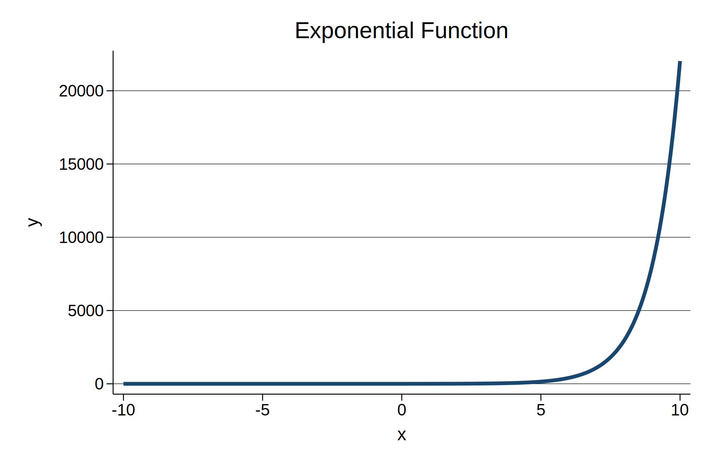
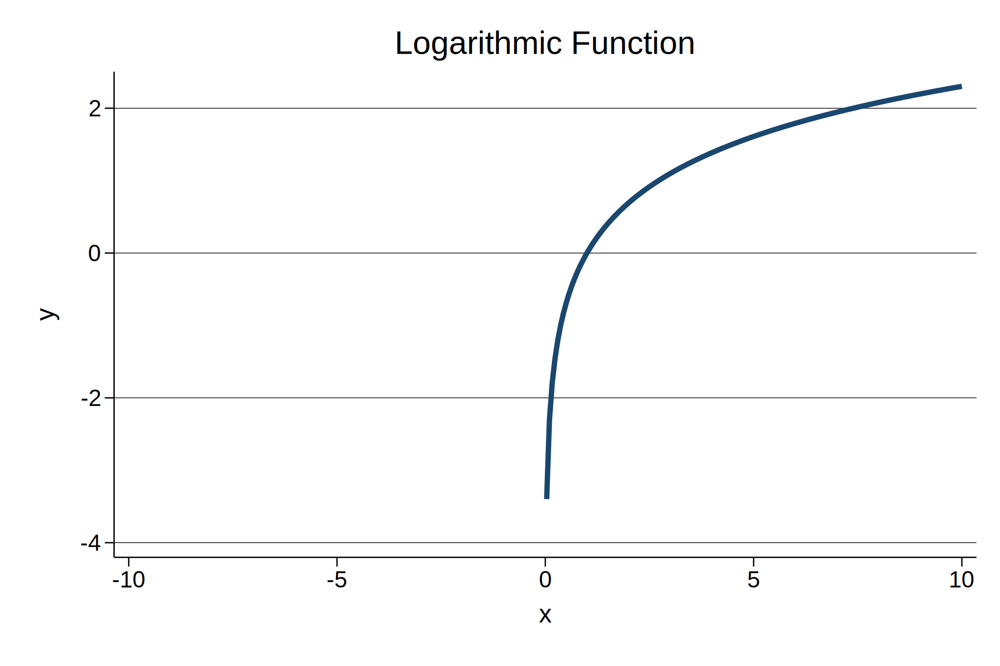
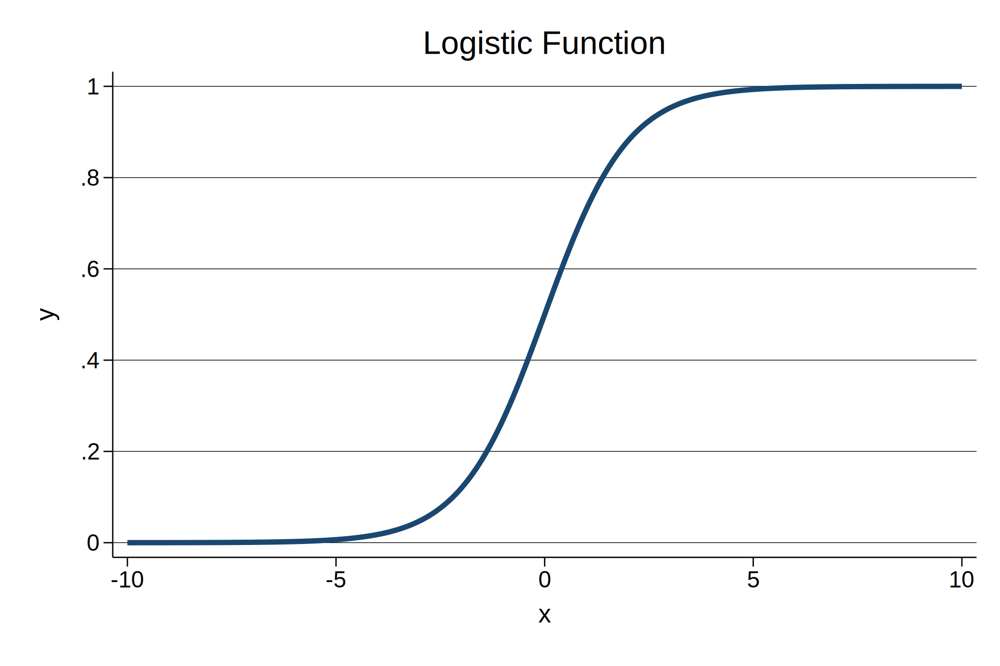

We consider the logarithm. One very simple way to present the logarithm is to use the constant $e$.
Let’s first consider the exponential function with base $e$, $y = e^x$
. twoway function y = exp(x), title("Exponential Function") range(-10 10)

If $y = e^x$, then $\ln(y) = x$.
Note that in the equation above, we are taking the logarithm of $y$. To get some quick sense of how the logarithm behaves, we are going to graph $y = \ln(x)$.
. twoway function y = ln(x), title("Logarithmic Function") range(-10 10)

In logistic regression, which we are discussing in more detail in this course, we consider the odds of our outcome:
$$\frac{p(y)}{1-p(y)}$$
We will be working with the log odds:
$$\ln(\frac{p(y)}{1-p(y)})$$
To graph these log odds, we need to solve for $p(y)$:
$$p(y) = \frac{e^x}{1 + e^x}$$
. twoway function y = exp(x)/(1 + exp(x)), title("Logistic Function") range(-10 10)

An interesting sidenote is that the logarithm forms the basis of the logarithmic spiral. The equation for a logarithmic spiral in polar coordinates is: $r = ae^{b \theta}$, where $\theta$ is the angle, $r$ is the radius, and $a$ and $b$ are constants.
Logarithmic spirals can be found in nature in the nautilus shell, and in sunflowers.